Starup
Geschichteter, feinkörniger Granit mit blauem und rotem Korn
Höhe ü. d. Erde: 140 cm
Größte Breite: 81 cm
Größte Dicke: 24 cm
Runenhöhe: 14-15 cm
Runeninschrift:
ąiriks (:) kubl
Eriks Denkmal

7 - Starup - Letztes Update vom 05.10.2025
Listennummer : DR 17 / DK SJy 54
Navidaten: 55.247952 9.532024 oder: Starup Kirkevej 30, 6100 Haderslev
Transliteration: ąiriks (:) kubl
Dies ist ein Luftfoto vom 06.04.2019 von Skråfoto, das die Kirche von Starup zeigt (Bild zugeschnitten / Standort Runenstein von mir rot umrandet). Skråfoto ist eine Webanwendung, die von Klimadatastyrelsen weltweit kostenlos bereitgestellt wird - Freie Nutzung unter Beachtung der Lizenz: CC BY 4.0 Die Aufnahmen werden seit 2017 alle zwei Jahre erneuert und neben einer Senkrechtaufnahme wird ein Schrägbild aus jeder Himmelsrichtung angeboten, das man über eine Adresssuche aufrufen kann.
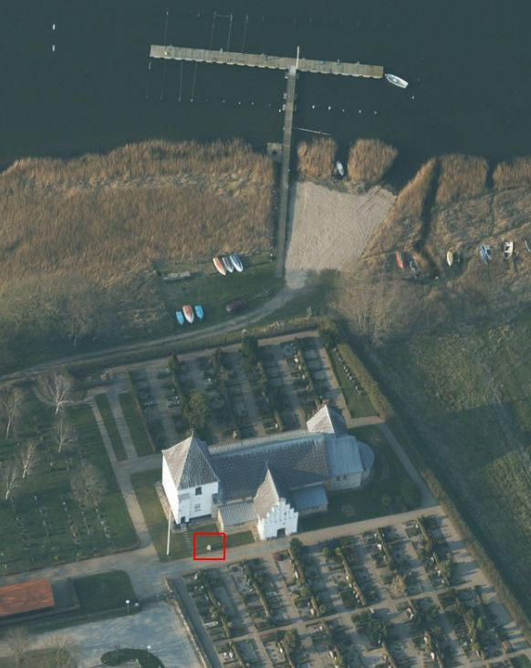
Die Inschrift, die ursprünglich mit tiefen, breiten Runen gehauen wurde, ist eine der ältesten dänischen Runeninschriften (Datierung: 750 - 850 n. Chr.). Es ist auch der einzigste der älteren Runensteine, auf dem sogenannte Wenderunen vorkommen. Dies kennt man sonst nur von urnordischen Inschriften. Der Charakter der Steinrückseite deutet daraufhin, dass er nicht seine ursprüngliche Dicke bewahrt hat, sondern ein Teil abgespalten wurde. Die einzeilige Inschrift liest sich von unten nach oben.
Der Stein wurde bei der Hauptrestauration der alten Kirche von Starup, die 1914 begonnen worden war, meinen Recherchen nach durch Maurermeister Wolkersens entdeckt. Er fand sich unter dem südlichen Eingang der Kirche etwa ½ m unter der jetzigen Erdoberfläche und war offenbar die ursprüngliche Türstufe der Kirche. Dies wird durch die alte Türangel und Schlossspur bekräftigt, die bei der Restauration ebenfalls entdeckt wurden. Ursächlich für die Lage des Steines unter der Erde mag die Sturmflut von 1872 gewesen sein, die die ganze tiefliegende Umgebung des überschwemmte und auch in die Kirche von Starup eindrang. Bei einer darauffolgenden Aufschüttung wurde der Stein wohl zugedeckt. Die Anfänge der Kirche lassen sich auf das 11. Jahrhundert datieren.
Heute steht der Stein südlich der Kirche auf dem Kirchhof. Die Runenzeichen wurden zur besseren Erkennbarkeit am 07.06.1960 durch den Runologen des Nationalmuseum in Kopenhagen, Erik Moltke, mit schwarzer Farbe nachgemalt.
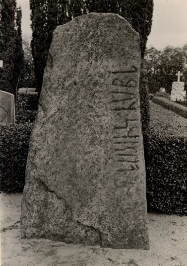
Fotografie von Erik Moltke (*04.04.1901 - 19.10.1984, Runologe, Historiker - link-LIVES)
 Bildquelle: Scan von Buchumschlag "Runerne i Danmark og ders
oprindelse" - Erik Moltke - 1976 - Lizenz:
CC-BY-SA
Bildquelle: Scan von Buchumschlag "Runerne i Danmark og ders
oprindelse" - Erik Moltke - 1976 - Lizenz:
CC-BY-SA
vom 22.04.1930 oder vom 14.04.1931 (War laut DR zweimal vor Ort).
Der digitalen Sammlung des Nationalmuseums Kopenhagen entnommen - Lizenz: CC-BY-SA
Im Vorfeld zu dem 2016 erschienenen Buch von Lisbeth M. Imer (*1973, Runologin am Nationalmuseum Kopenhagen) "Danmarks Runesten - en fortælling" reiste sie mit dem Fotografen Roberto Fortuna zur Bestandsaufnahme durch die Lande. Dieser hat die Runensteine abends bei Dunkelheit mit Schräglicht aufgenommen und darüber wirklich herausragende Fotos erzielt. Diese Aufnahme entstand am 5. März 2012.
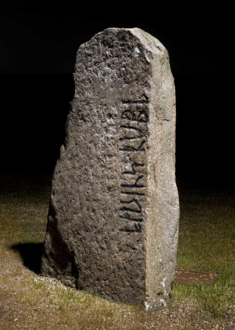
Der digitalen Sammlung des Nationalmuseums Kopenhagen entnommen - Lizenz: CC-BY-SA
Die Informationen der dänischen Online-Runen-Datenbank zu diesem Runenstein (in dänischer Sprache) finden sich hier.
Den Eintrag zu dem Runenstein von Starup in "Fund og Fortidsminder" findet man hier. Darin ist inzwischen dieser Zustandsbericht des Steinrestaurators Leif Vognsen aus dem Jahr 2018 eingebettet.
Über die Webseite "Runes" - ein Forschungsprojekt der Akademie zu Göttingen - kann man diese Informationen zum Runenstein von Starup abrufen.
Auf den Webseiten des Dänischen Nationalmuseums - Danmarks Kirker - kann man eine in dänischer Sprache gehaltene 41-seitige, bebilderte Abhandlung als pdf-Datei zur Baugeschichte/Innenausstattung der Kirche von Starup aus den Jahren 1954 abrufen.
Über die Internetseiten der Königlichen Bibliothek in Kopenhagen kann man diese Zeichung der Kirche von Starup aus dem Jahr 1853 aus der Sammlung des Apothekers und historischen Sammlers I. G. Burman Becker (*26.04.1802 - 06.10.1880) abrufen.
Via Google StreetView kann man heutzutage von zu Hause aus bequem durch den Kirchhof von Starup spazieren, an dem Runenstein vorbeischlendern, einmal komplett um die Kirche herum und auch noch in die Kirche hineingehen. Einfach eine tolle Geschichte!
Zwischen 1985 und 1987 wurden im Umfeld der Kirche Ausgrabungen durchgeführt. Ergänzende Untersuchungen wurden 2001 sowie 2010 - 2011 vorgenommen. Ein Bericht dazu in dänischer Sprache - Starup Østertoft HAM 1801Sb 61, Sdr. Starup Sogn, Af Anders Hartvig - kann im Internet hier abgerufen werden.
Das Resümee der Arbeit - Die Ausgrabungsfläche umfasste ca. 2100 qm - (via Google übersetzt): Bei den archäologischen Untersuchungen vor der Anlage eines Waldfriedhofs, einer Erweiterung des Pfarrhauses nach Westen und dem Abriss der Friedhofskapelle wurden Spuren einer Siedlung mit mindestens 16 ein- und zweischiffigen Häusern gefunden aus dem frühen Mittelalter (1000-1250 n. Chr.). Neben den mittelalterlichen Siedlungen wurde der östliche Abschluss eines Mittelsohlenhauses, vermutlich aus der Jungsteinzeit (4000-1750 v. Chr.), untersucht. Außerdem wurden vermutlich zwei Schmieden aus der späten Wikingerzeit / dem frühen Mittelalter (900-1200 n. Chr.) gefunden. Zwischen den Gebäuden verstreut waren ein paar Gruben, in denen sich etwas Keramik, Eisenschlacke und Metallgegenstände befanden. Unter der Kapelle wurde die Fortsetzung des breiten Nord/Süd-orientierten Grabens westlich der Kirche untersucht, der Graben wird anhand von Keramik aus den oberen Schichten in die späte Wikingerzeit/Frühmittelalter (900-1200 n. Chr.) datiert.
Ergänzend gibt es diese reich bebilderte Abhandlung in dänischer Sprache aus dem Jahr 2016, die aus dem vom Haderslev Museum herausgegebenen Buch "Haderslev En Købstad bliver til - Udravninger ved Starup og Møllestrømmen" stammt: "Anders Hartvig: Udgravningern ved Sdr. Starup Kirke (Kapitel 1 - S. 17-48)". Außerdem findet sich im Kapitel 2 (S. 50-84) der interessante Aufsatz "Storhed og fald - Den romaske frådstenskirke i Starup og Haderslev første stenkirke" von Thomas Bertelsen.
Das Foto des Runensteins im linken Frame stammt von meinem ersten und bisher einzigen Besuch - Samstag, 03.08.1991 - als noch keine Rasenfläche um ihn herum angelegt war.
Im Rahmen meiner 2022er Wikingertour nahm ich mir aber mal wieder die Zeit und war am Montag, 30.05.2022, vor Ort. Dabei konnte ich in Starup diese Fotografien anfertigen:
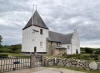 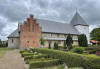 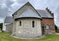 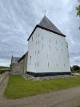 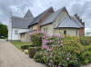 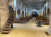 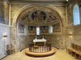


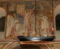 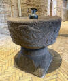 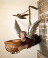 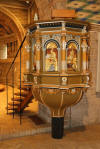 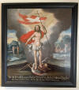 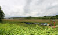


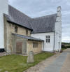 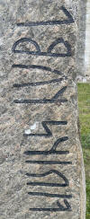 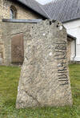 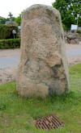 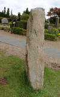 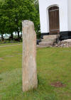 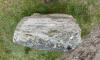


Literaturhinweise:
Michael Lerche Nielsen - Starup Et jysk stednavn med historisk og arkæologisk potentiale - KUML 2014 - Nr. 36 - S. 187-204